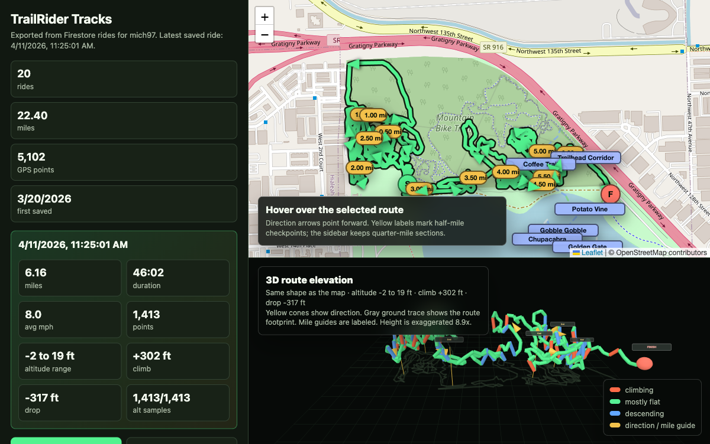

GPS route recording
Capture ride paths with location history and map overlays.
TrailRider is an iOS mountain bike tracker for GPS ride recording, route maps, elevation profiles, speed analytics, and HealthKit workout history.

TrailRider keeps the core flow direct: record the ride, understand the trail, and keep the workout data connected to the rest of iOS.
Capture ride paths with location history and map overlays.
Review climbs, descents, speed changes, and route segments after each ride.
Keep rides organized with HealthKit-ready session summaries.
Prove reliable ride recording first, then improve trail analytics, route history, battery use, and post-ride review.